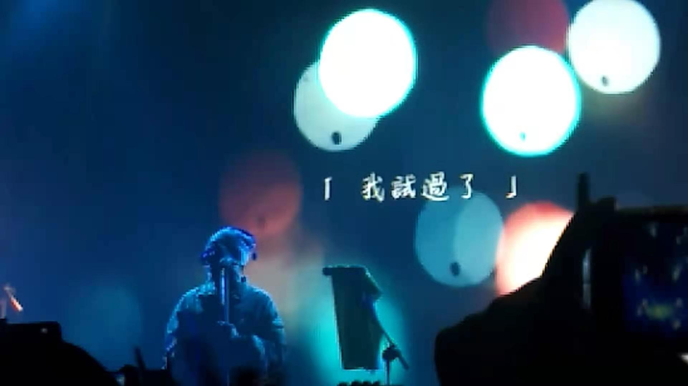

记一次live——康姆士
这是我第一次看live，一直想却总因种种原因没有去成，其实种种原因也只是借口罢了，第一次尝试，无论什么，都会既好奇又怕受到伤害，总觉得少一个机会迈出那一步，但有了第一次，往后也就可以纳入日常了。领票的时候看到排队的都是年轻人，无论是妆容还是配饰都可以看出是费了些心神的，相比之下我们就显的有些随意了，不禁在心里感叹一句年轻真好。我们去时，队伍沿着墙已经拐了好几个弯了，并且还在往下个弯拐，后来知道现场来了一千多人，我想，这么多人应该绝大多数不会随便找个演出来消遣，而是专门为了康姆士而来的，至少我们是的。
想到康姆士，就会想到永驻用不标准的普通话唱着“我不希望你孤单的去面对整个喧哗世界”。这首歌很早就听过，可惜的是这次没有唱，但真正认识康姆士是在前年乐队的夏天。我自认为接触新鲜事物比较少，有上面的内因也有身处环境的外因，每次发现新的兴趣，都让我对这个精彩的世界多了些留恋。感谢那个夏天让我认识了许多乐队，康姆士就是其中一个。虽然他们淘汰很早，但给我就下很深的印象。隔着屏幕会被”你要如何，我们就如何“唱哭，这次live跟着唱的也是声嘶力竭。记得节目中，永驻说他家乡那的一个村子虽然矿场已经枯竭，但他们还是要守在那，那里的小孩子没有见过外面的世界，甚至吃糖也是很奢侈的事情，但他们很快乐，令人心痛的那种，什么都不懂的快乐。于是永驻写下了“如果我，不对真的就是我，想带你飞。别哭，前面一定有路，仿佛幸福在不远处，你心里有我，你身边是我，你要如何我们就如何。”康姆士的歌词如果静静的听，会有一股温暖的力量，就像在你长大之后，终于懂得了许多童年永远无法理解的东西，然后有一种失望的感觉，这时候，突然有个温暖的声音，让你想起了曾经的单纯和善良。
他静止的时候你会觉得他穿着童装有点滑稽，但在台上随着音乐跳起来时，就会变成真的小孩，永驻的帽子上有三个球，会随着他蹦蹦跳跳而蹦蹦跳跳，然后感染到每个人跟他一起跳。在唱到“恐龙一样的勇敢”前，永驻说 :在新闻上看到一个六岁的小女孩，患有很严重的心脏病，但她很勇敢，她非常喜欢恐龙，认为这类动物是勇敢的象征，虽然她最后还是不在了，可是希望听到这首歌的大人像恐龙一样的勇敢。这个世界跟我想象的有些出入， 总有些出入，但是你懂我懂，我懂你懂，我们会像恐龙一样的勇敢。不是一些慷慨激昂的词语，却有效的产生勇气的共鸣。
中间一段时间永驻跳的太嗨踩到了什么线，然后便尬聊了五分钟，说他半夜打车去中街都关门了，问沈阳有什么吃的，下面都在喊老雪。亲身经历这种对话让我感觉他不仅活在社交媒体和音乐中 ，他也在生活，和每个人一样，我想到之前看过赵雷的采访，他说不希望大家见到他就拿起手机拍，没什么好拍的，走过去特正常的打个招呼多好。比如如果我见到女流，我不知道自己能不能做到，这其实是两种看法，完全的平庸的自己在只表现出优秀的他们面前，很难不自卑。
最后演出结束，康姆士都下场了，大家却都没走，在喊一些什么，起初没听懂，也没经历过，不久永驻就返场了，唱起了“狼狈”，只有一个吉他手，一首安静的情歌，不得不说，康姆士的现场还是很稳的，大家一起唱我的狼狈，重复了很多遍。最后一首 “bybyby” 唱完就真的结束了 。灯光亮起，终于可以看清身边的人了，我们一起站了两个小时，互相踩和推搡过，然后现在要各自回去了。就像我们也要毕业，然后夏天也要开始了。美好的温暖的总是各有不同却让人充满期待。
